BUCCARI BC-05 Machine à café automatique. Mode d'emploi
Veuillez lire attentivement ce mode d'emploi avant utilisation et le conserver pour pouvoir vous y référer ultérieurement.
1. Introduction
- Merci d'avoir choisi la BUCCARI BC-05, la dernière génération de nos machines à café entièrement automatiques, conçue à partir des technologies clés de la marque.
- Ce mode d'emploi explique comment utiliser et nettoyer la machine à café. Le fabricant décline toute responsabilité pour les dommages causés par une utilisation non conforme à ce mode d'emploi.
- Un fonctionnement fiable dépend d'une utilisation et d'un entretien corrects. Lisez attentivement ce mode d'emploi avant la première utilisation et gardez-le à portée de main. Bonne dégustation !
- Chaque machine est entièrement testée en usine ; il est donc normal de trouver une petite quantité de café moulu à l'intérieur. Nous garantissons que l'appareil est neuf.
2. Consignes de sécurité
La sécurité est l'une des caractéristiques les plus importantes de la BC-05. Les dispositifs de sécurité ne sont efficaces que si vous respectez les consignes ci-dessous pour prévenir les blessures et les risques pour la santé.
2.1 Risques pour l'utilisateur
Attention. Une utilisation incorrecte de la machine à café peut entraîner des blessures légères. Respectez strictement ces règles :
- Lisez attentivement ce mode d'emploi avant utilisation.
- N'utilisez pas la machine à café si elle est défectueuse ou endommagée.
- Ne modifiez pas les dispositifs de sécurité intégrés.
- Ne touchez pas les parties chaudes de la machine.
- Les enfants à partir de 8 ans et les personnes aux capacités physiques, sensorielles ou mentales réduites ou manquant d'expérience ne peuvent utiliser cet appareil que sous surveillance, ou après avoir été instruits de son utilisation en toute sécurité par une personne responsable et avoir pleinement compris les risques encourus.
- Ne laissez pas les enfants jouer avec l'appareil ou à proximité. Les enfants de moins de 15 ans ne peuvent l'utiliser que sous la surveillance d'un adulte.
- Tenez l'appareil et son cordon d'alimentation hors de portée des enfants de moins de 8 ans.
- Installez la machine à café à un endroit où elle est facile à inspecter et à entretenir régulièrement.
- Ne mettez que des grains de café dans le réservoir à grains. N'utilisez jamais de café moulu.
Risque de choc électrique. Une utilisation incorrecte de la machine à café peut entraîner des blessures graves. Respectez toujours les points suivants :
- Respectez les directives basse tension ainsi que les réglementations de sécurité nationales et locales.
- Assurez-vous que la machine est correctement reliée à la terre lors du branchement.
- La tension du secteur doit correspondre à celle indiquée sur la plaque signalétique de l'appareil.
- Ne touchez pas les pièces sous tension.
- Coupez l'interrupteur principal et débranchez l'appareil avant toute opération d'entretien.
- Le cordon d'alimentation ne peut être remplacé que par un technicien de service qualifié.
Risque de brûlure. Une utilisation incorrecte de la machine à café peut entraîner des blessures légères.
- Il existe un risque de brûlure aux points de distribution des boissons, de l'eau chaude et de la vapeur. Tenez vos mains éloignées de la buse de café pendant le fonctionnement et le nettoyage.
- La buse de café et le groupe d'infusion deviennent très chauds. Ne tenez que les poignées prévues à cet effet. Ne nettoyez le groupe d'infusion qu'après refroidissement complet de la machine.
2.2 Risques pour l'appareil
Attention. Ignorer ces avertissements peut entraîner un choc électrique mortel. Respectez toujours les points suivants :
- N'allumez pas la machine lorsque le réservoir d'eau est vide.
- Après une longue période d'inutilisation (par exemple pendant les vacances), nettoyez soigneusement la machine à café avant de la réutiliser.
- Protégez les grains de café des conditions défavorables, notamment du gel et de l'humidité.
- Les pannes ne doivent être réparées que par des techniciens qualifiés.
- Utilisez uniquement des accessoires d'origine du fabricant.
- En cas de dommage extérieur visible ou de fuite de liquide, contactez immédiatement le service client pour une réparation ou un remplacement.
- Ne rincez pas l'appareil sous l'eau courante et ne le nettoyez pas avec un nettoyeur à vapeur.
- Ne placez pas l'appareil sur des surfaces sensibles aux éclaboussures d'eau.
- Ne mettez que des grains de café dans le réservoir à grains. N'utilisez jamais de café moulu.
- Si la machine à café et ses accessoires ont été transportés à une température inférieure à 10 °C, laissez-les 3 heures à température ambiante avant de les brancher et de les allumer.
2.3 Hygiène : eau
Attention. L'utilisation d'une eau inadaptée peut nuire à votre santé. Respectez toujours les points suivants :
- Utilisez uniquement une eau propre et non contaminée.
- Ne remplissez pas la machine à café avec de l'eau corrosive.
- La dureté carbonatée ne doit pas dépasser 5–6 °dKH ou 8,9–10,7 °fH.
- Teneur en chlore : 100 mg/l maximum.
- Valeur du pH : 6,5–7 (neutre).
3. Description du produit
3.1 Vue d'ensemble de la machine

- Couvercle du réservoir à grains
- Couvercle du réservoir d'eau
- Panneau latéral gauche
- Panneau latéral droit
- Écran tactile TFT
- Porte latérale
- Mousseur à lait
- Cache de la buse
- Buse de café
- Réservoir à lait (en option)
- Flotteur du bac d'eau usée
- Grille d'égouttage
- Couvercle du bac d'eau usée

- réservoir d'eau
- interrupteur d'alimentation
- prise d'alimentation
3.2 Caractéristiques techniques
| Élément | Valeur |
|---|---|
| Modèle | BC-05 |
| Tension / fréquence nominales | 220–240 V, 50/60 Hz |
| Puissance | 1350 W |
| Capacité du réservoir d'eau | 1,2 l |
| Capacité du réservoir à grains | 250 g |
| Capacité du bac à marc | 10 portions |
| Dimensions (L × l × H) | 425 × 181 × 377 mm |
3.3 Contenu de l'emballage
| Accessoire | Qté |
|---|---|
| Cordon d'alimentation | 1 |
| Mode d'emploi | 1 |
| Brosse de nettoyage | 1 |
| Aiguille de nettoyage | 1 |
| Brosse de nettoyage du tube vapeur | 1 |
| Réservoir à lait (en option) | 1 |
4. Installation et première utilisation
4.1 Emplacement
Emplacement. La machine peut être endommagée si ces conditions ne sont pas respectées :
- Laissez suffisamment d'espace au-dessus de la machine pour ajouter des grains et de l'eau.
- Laissez au moins 8 cm entre l'arrière de la machine et le mur pour la ventilation.
Climat. La machine peut être endommagée si ces conditions ne sont pas respectées :
- Température ambiante de +10 °C à +40 °C.
- Humidité relative de 80 % maximum.
- La machine à café est destinée exclusivement à un usage intérieur. Ne l'utilisez pas à l'extérieur ; protégez-la de la pluie, de la neige et du gel.
Alimentation électrique. Le raccordement électrique doit être conforme aux réglementations du pays d'utilisation. La tension du secteur doit correspondre à celle indiquée sur la plaque signalétique.
Danger ! Respectez toujours les points suivants :
- N'utilisez pas la machine si le cordon d'alimentation est endommagé. Un cordon endommagé doit être remplacé immédiatement par un technicien de service qualifié.
- Les rallonges sont déconseillées. Si l'une d'elles est indispensable, la section du conducteur doit être d'au moins 1 mm².
- Disposez le cordon de façon à ce que personne ne puisse trébucher dessus. Il ne doit pas passer sur des arêtes vives, pendre librement, être pincé ou reposer sur des objets chauds ; tenez-le éloigné de l'huile et des produits de nettoyage agressifs.
- Ne soulevez pas et ne tirez pas l'appareil par le cordon. Ne débranchez pas en tirant sur le cordon. Ne touchez pas le cordon ou la fiche avec les mains mouillées et n'insérez pas une fiche mouillée dans une prise.
4.2 Branchement électrique
Branchez une extrémité du cordon d'alimentation dans la prise située à l'arrière de la machine et l'autre extrémité dans une prise murale.

4.3 Remplissage d'eau et de grains
Remplissage du réservoir d'eau. Soulevez le couvercle du réservoir, retirez le réservoir, remplissez-le d'eau (sans dépasser le repère MAX) et remettez-le en place.
Ajout de grains. Ouvrez le couvercle du réservoir à grains, versez les grains de café et refermez le couvercle.
4.4 Première mise en marche
- Allumez la machine à l'aide de l'interrupteur d'alimentation situé à l'arrière. L'écran de démarrage s'affiche et la machine effectue automatiquement : autotest → chauffe → rinçage → réinitialisation.
- Pendant l'autotest, la machine contrôle le niveau d'eau, le groupe d'infusion, la porte latérale et le bac d'eau usée. Si elle détecte un problème, un avertissement s'affiche ; suivez les instructions à l'écran.
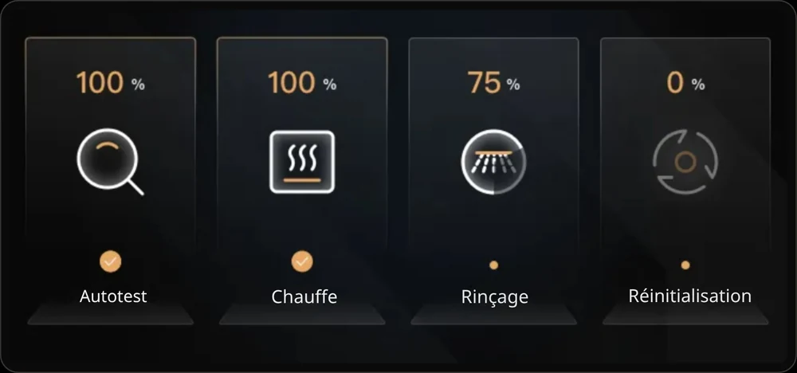
5. Préparation des boissons
Le menu des boissons comporte deux pages. Passez de l'une à l'autre avec les flèches ‹ et ›.
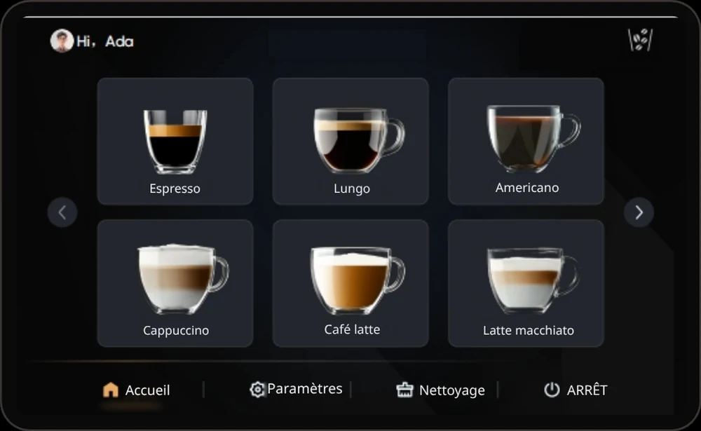
5.1 Café noir (Espresso, Lungo, Americano)
- Sur l'écran d'accueil, touchez une boisson pour ouvrir ses réglages. Pour un espresso, par exemple, vous pouvez régler l'intensité, la température d'extraction, la durée de pré-infusion et le volume. Touchez « Démarrer » ; les réglages sont enregistrés automatiquement.
- La machine prépare la boisson et affiche la progression en pourcentage. À 100 %, la fenêtre « Enjoy your coffee » s'affiche et la boisson est prête. Pour arrêter la préparation, touchez l'icône Annuler.
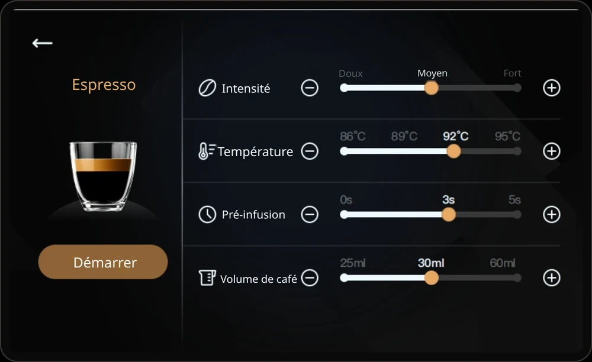
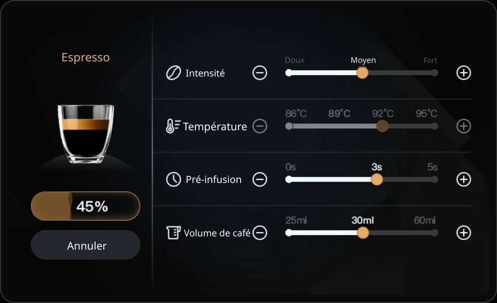
5.2 Café au lait (Cappuccino, Café latte, Latte macchiato, Macchiato, Flat White)
- Versez du lait dans le réservoir à lait (ou plongez le tube à lait directement au fond d'une brique de lait). Assurez-vous que le tube est bien raccordé au mousseur à lait. Un lait réfrigéré à 4–8 °C est recommandé. Vérifiez le bouton du mousseur : « Froth milk » donne de la mousse de lait chaude, « Warm milk » donne du lait chaud.
- Sur l'écran d'accueil, touchez une boisson pour ouvrir ses réglages. Pour un café latte, par exemple, vous pouvez régler l'intensité, la température d'extraction, la durée de pré-infusion, le volume de café et la durée de moussage du lait. Touchez « Démarrer » ; les réglages sont enregistrés automatiquement.
- La progression s'affiche en pourcentage. À 100 %, un message confirme que la boisson est prête. Vous pouvez arrêter à tout moment avec l'icône Annuler.
- Après une boisson lactée, la machine demande s'il faut nettoyer à fond le mousseur à lait. Si vous préparez aussitôt une autre boisson lactée, touchez « Annuler ». Sinon, touchez « Nettoyer ». Voir 7.1.3 « Nettoyage approfondi du mousseur à lait ».


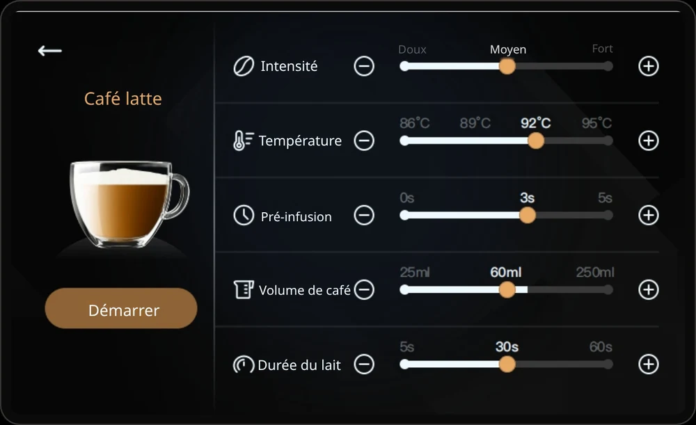
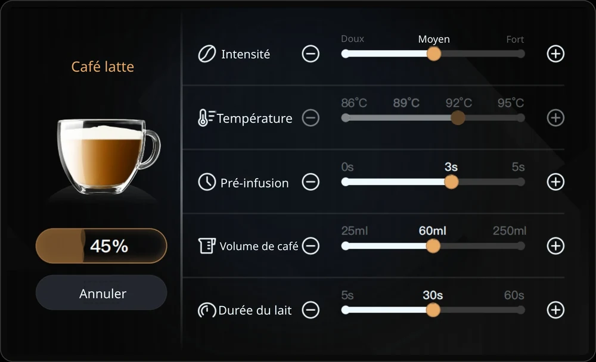
5.3 Lait chaud et mousse de lait
- Versez du lait dans le réservoir (ou plongez le tube au fond d'une brique de lait) et raccordez le tube au mousseur. Un lait réfrigéré à 4–8 °C est recommandé. Réglez le bouton du mousseur sur « Froth milk » (mousse chaude) ou « Warm milk » (lait chaud).
- Touchez l'icône du lait sur l'écran d'accueil et réglez la durée. Touchez « Démarrer » ; les réglages sont enregistrés automatiquement.
- La progression s'affiche en pourcentage ; à 100 %, un message confirme que la boisson est prête. Vous pouvez arrêter à tout moment avec l'icône Annuler.
- Ensuite, la machine propose le nettoyage approfondi du mousseur à lait ; procédez comme après un café au lait.
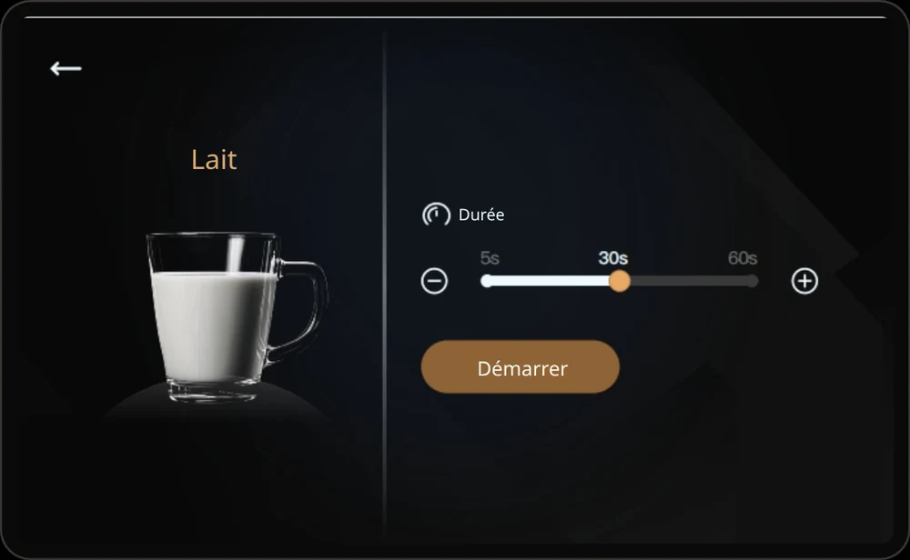
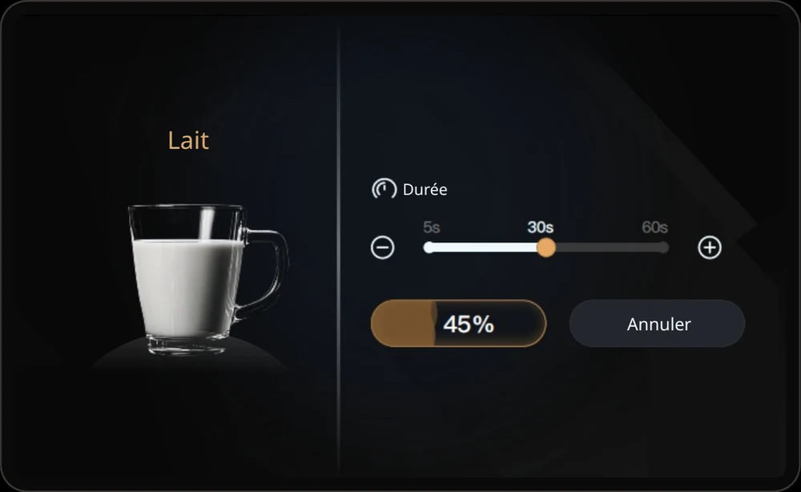
5.4 Eau chaude
- Touchez l'icône de l'eau chaude sur l'écran d'accueil et réglez la température et le volume. Touchez « Démarrer » ; les réglages sont enregistrés automatiquement.
- La machine distribue de l'eau chaude et affiche la progression en pourcentage. À 100 %, un message confirme la fin. Vous pouvez arrêter à tout moment avec l'icône Annuler.
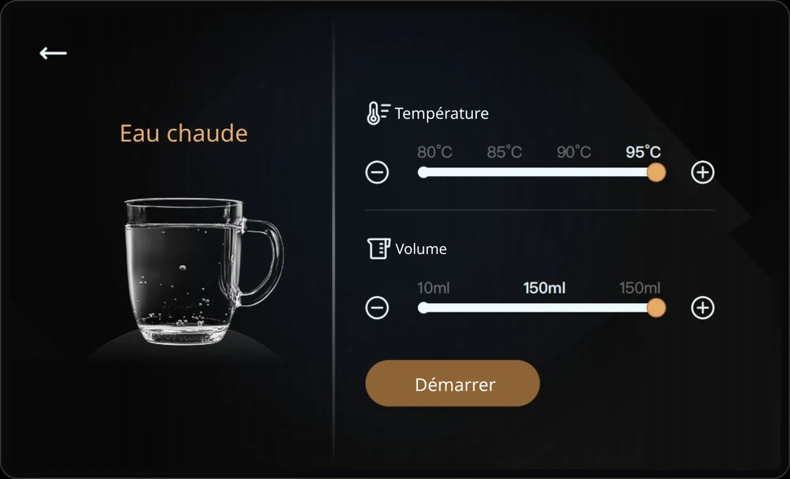
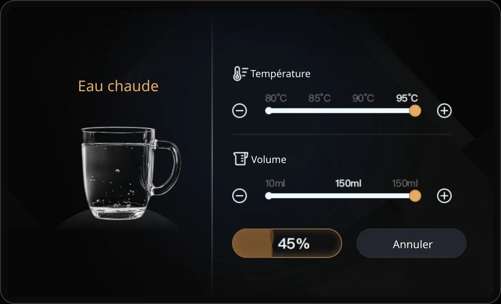
5.5 Profils utilisateur
Touchez l'icône d'avatar en haut à gauche et choisissez l'utilisateur 1, 2, 3 ou 4. Chaque utilisateur peut définir et enregistrer ses propres réglages de boissons.
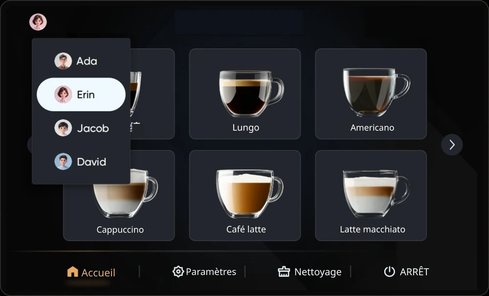
5.6 Réglage de la mouture
La mouture est réglée en usine au niveau optimal, vous pouvez donc préparer du café immédiatement. Si le café est léger avec peu de crema, ou si après quelques tasses il coule très lentement, goutte à goutte, réglez la mouture :
- Ouvrez le couvercle du réservoir à grains.
- Lancez la préparation d'un café. Lorsque vous entendez le moulin, tournez le bouton de réglage de la mouture sur la position souhaitée (1 est la plus fine, 5 la plus grosse).
- Observez la vitesse d'écoulement du café. S'il coule trop lentement ou pas du tout, tournez le bouton vers 5. Pour un café corsé avec une crema épaisse, tournez-le d'un cran vers 1. Ne changez que d'un cran à la fois pour ne pas endommager la machine.

Attention. Un nouveau réglage de mouture ne prend effet qu'après au moins deux tasses. Si le résultat ne convient toujours pas, tournez le bouton d'un cran supplémentaire. La texture du marc dans le bac à marc peut aussi vous guider.
6. Paramètres
Touchez l'icône des paramètres en bas de l'écran pour ouvrir le menu des paramètres.
Langue. La machine prend en charge plusieurs langues d'interface ; choisissez celle qui vous convient.
Réglages des boissons. Modifiez ici tous les réglages des boissons de l'utilisateur actuel ; les modifications sont enregistrées automatiquement dans son profil.
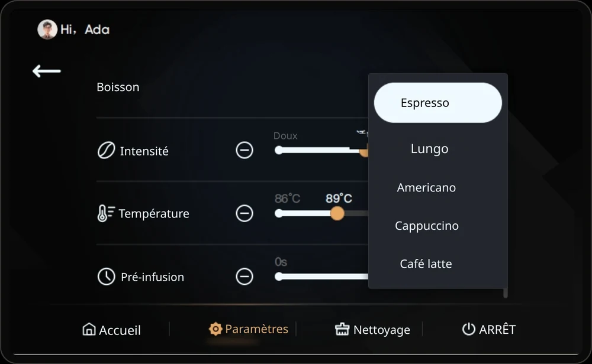
Arrêt automatique. Définit le délai d'arrêt automatique. Passé ce délai en veille, la machine et l'écran s'éteignent ; touchez l'écran pour la réveiller.
Rétroéclairage en veille. Luminosité de l'écran en veille : pleine, moitié ou éteinte.
Réglage pendant la préparation. Activé, il permet de modifier les réglages de la boisson pendant la préparation (sauf la température d'extraction). Désactivé, les réglages sont verrouillés pendant la préparation.
Son. Active ou désactive les signaux sonores.
Niveau de détartrage. Cinq niveaux ; sur OFF, le rappel est désactivé. Lorsque la consommation totale d'eau atteint le volume défini, un rappel de détartrage s'affiche. Volume par niveau : 1 — 80 l, 2 — 60 l, 3 — 40 l, 4 — 20 l, 5 — 10 l.
Paramètres de service. Réservés au service du fabricant.
Réinitialisation d'usine. Rétablit tous les paramètres aux valeurs d'usine : réglages du café, langue, boissons, arrêt automatique, luminosité, réglage pendant la préparation, son et niveau de détartrage.
Compteur de boissons. Nombre total de boissons préparées et nombre pour chaque boisson.
Nombre de détartrages. Nombre de détartrages effectués.
7. Nettoyage et entretien
7.1 Nettoyage automatique
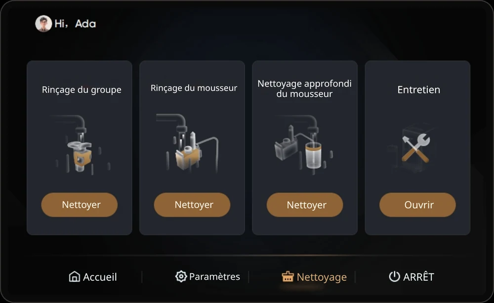
7.1.1 Rinçage rapide du groupe d'infusion. La chaudière chauffe et la pompe fait passer de l'eau dans le groupe d'infusion. Pendant le rinçage, l'eau usée s'écoule par la buse de café.
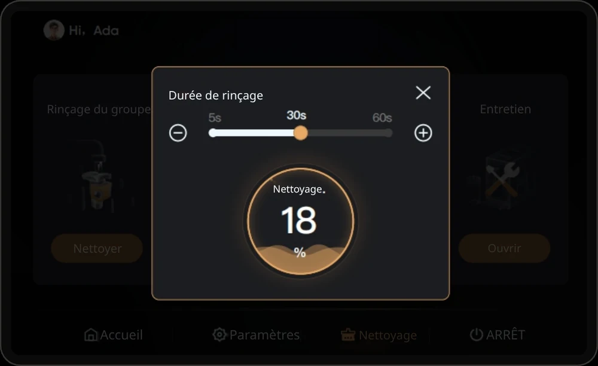
7.1.2 Rinçage rapide du mousseur à lait. La chaudière chauffe et la pompe rince le mousseur à lait. L'eau usée s'écoule par la buse de café.
7.1.3 Nettoyage approfondi du mousseur à lait. En suivant les indications à l'écran, lavez soigneusement le réservoir à lait, remplissez-le d'eau propre et touchez l'icône de nettoyage. La machine nettoie le mousseur en profondeur automatiquement ; la durée du nettoyage est réglable. L'eau usée s'écoule par la buse de café.
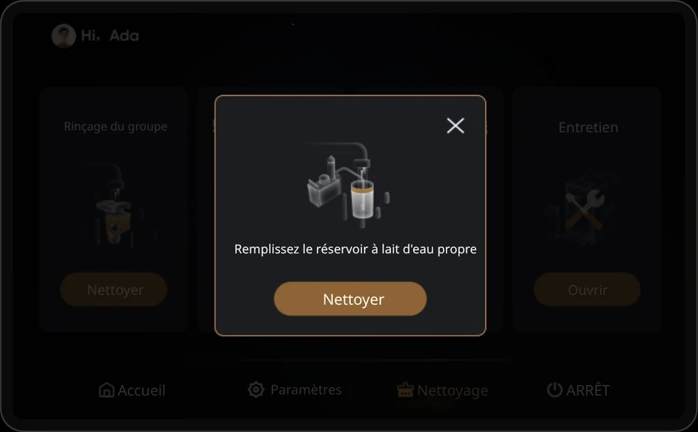
7.1.4 Entretien de la machine. Comprend le nettoyage approfondi du groupe d'infusion (avec pastille), le nettoyage approfondi du circuit lait (avec pastille) et le détartrage.
- Nettoyage approfondi du groupe d'infusion (pastille). Lancez le programme, placez une pastille de nettoyage dans le groupe d'infusion lorsque la machine le demande et touchez « Suivant ». Pendant le nettoyage, l'eau usée s'écoule par la buse de café.
- Nettoyage approfondi du circuit lait (pastille). Lancez le programme, mettez une pastille de nettoyage pour circuit lait et de l'eau propre dans le réservoir à lait lorsque la machine le demande, puis touchez « Suivant ». L'eau usée s'écoule par la buse de café. Ensuite, lavez le réservoir, remplissez-le à nouveau d'eau propre et relancez le nettoyage pour éliminer tout résidu de nettoyant.
- Détartrage. Touchez « Détartrer maintenant ». Lorsque la machine le demande, versez un détartrant pour machine à café et de l'eau propre dans le réservoir d'eau jusqu'au repère MAX. Placez un grand récipient sous la buse de café et touchez « Suivant ». Surveillez le récipient pour qu'il ne déborde pas. Ensuite, lavez le réservoir, remplissez-le d'eau propre et lancez un rinçage pour éliminer tout résidu de détartrant.
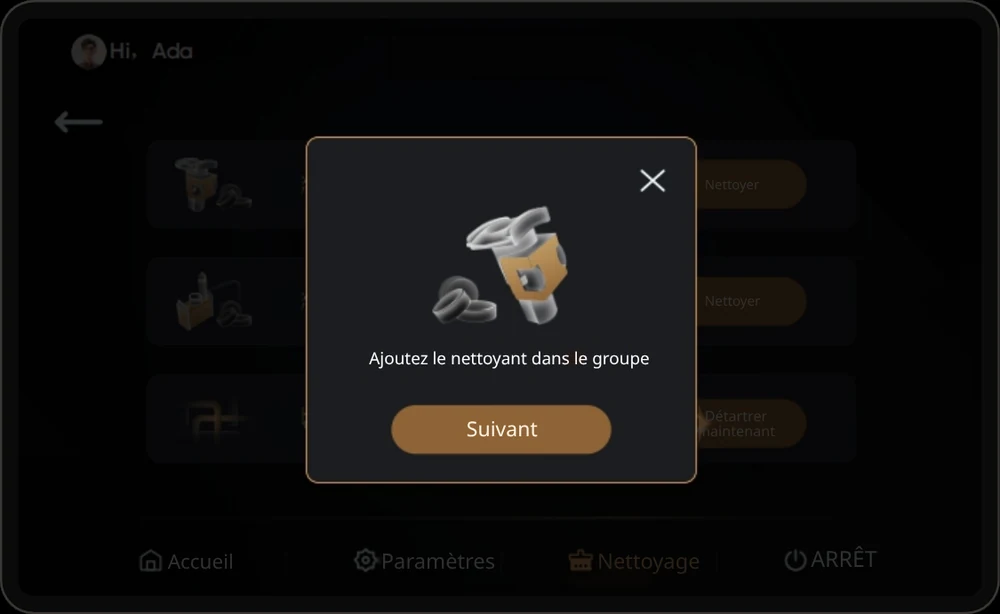
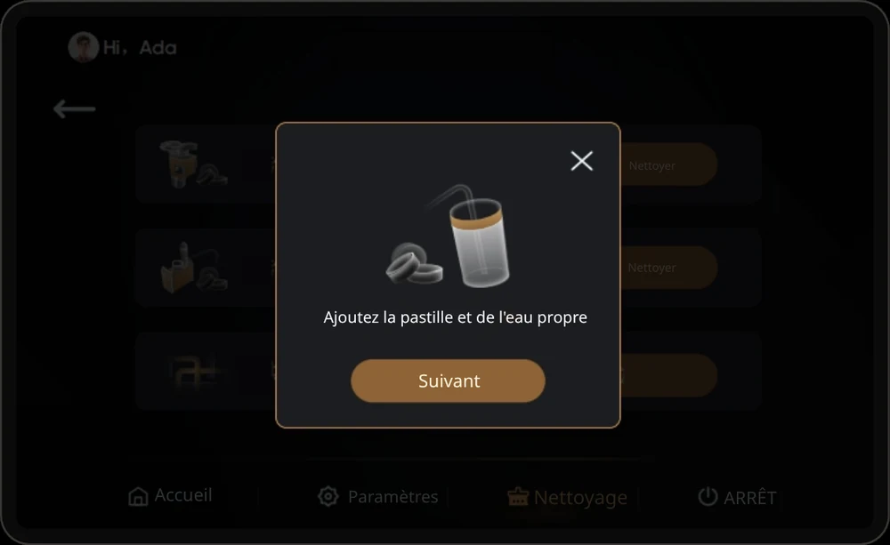
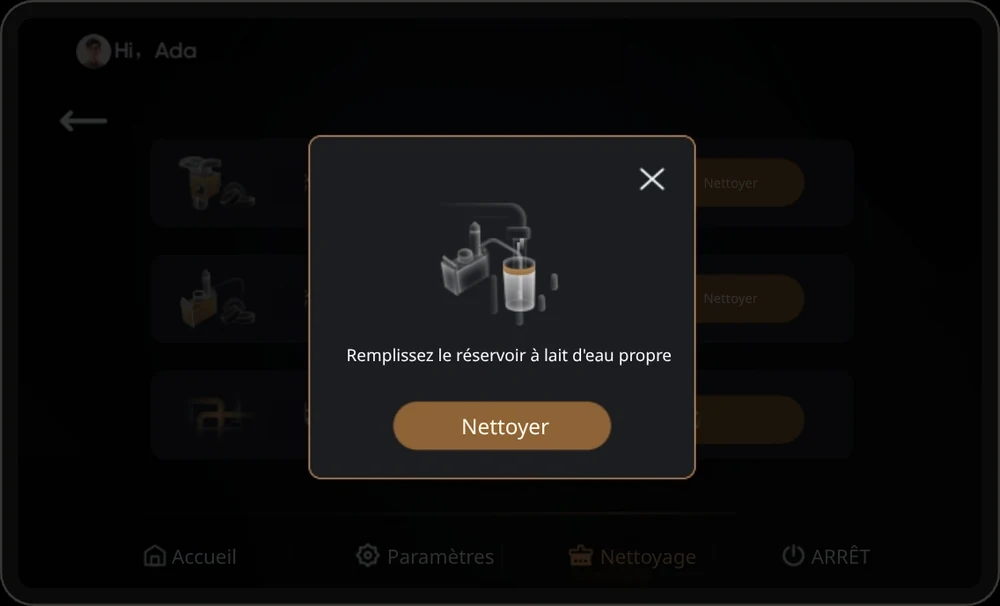
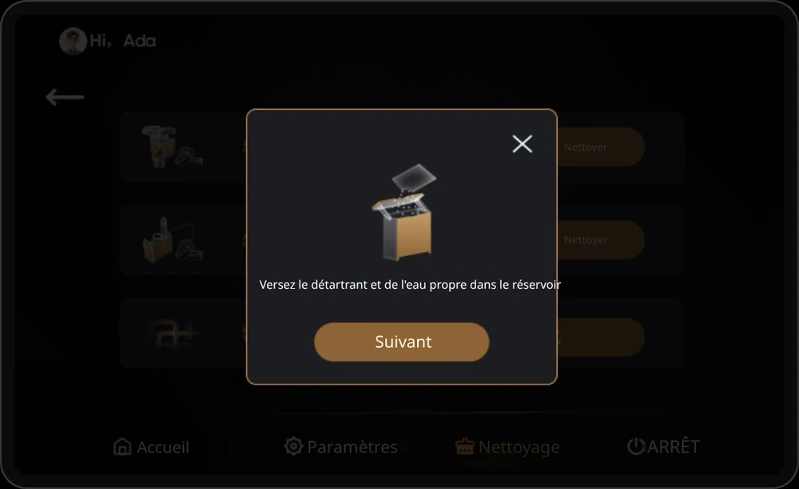
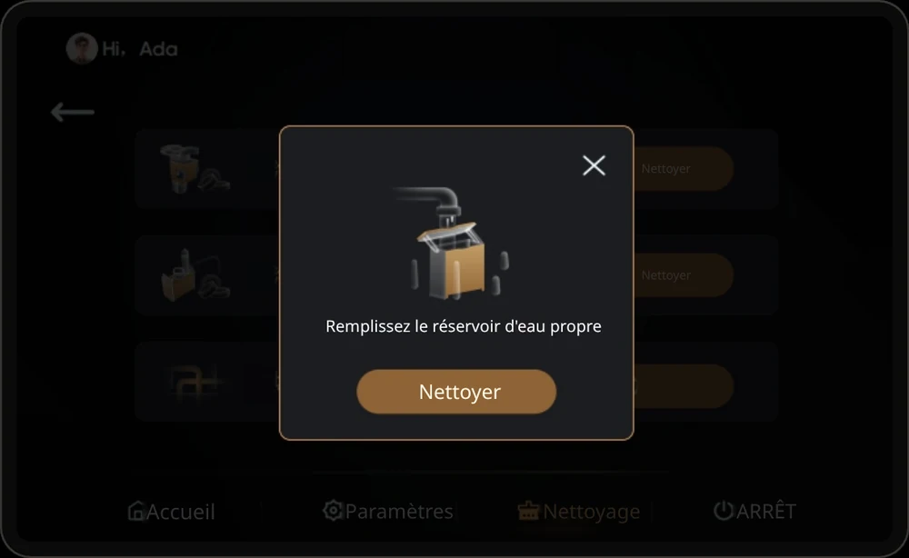
7.2 Nettoyage manuel
Nettoyez régulièrement ces pièces :
- Bac à marc — après chaque vidage.
- Ensemble du bac d'eau usée (bac, couvercle, grille d'égouttage) — videz-le et lavez toutes les pièces lorsque le flotteur monte.
- Réservoir d'eau — lavez-le régulièrement avec un chiffon doux et un détergent doux (une fois par mois recommandé).
- Buse de café — essuyez-la régulièrement avec une éponge ou un chiffon ; débouchez-la avec un cure-dent.
- Réservoir à grains — essuyez-le de temps en temps avec un chiffon sec (une fois par mois recommandé).
-
Conduit du café moulu (une fois par mois ou en cas d'obstruction).
Remarque. À effectuer uniquement lorsque la machine est éteinte et débranchée.
① Ouvrez la porte latérale. ② Nettoyez le conduit avec la brosse. ③ Retirez le marc de café visible à l'intérieur de la machine, si nécessaire à l'aide d'un aspirateur. ④ Retirez le marc et les salissures du bac d'eau usée.

Conduit du café moulu derrière la porte latérale -
Nettoyage manuel du mousseur à lait (une fois par mois recommandé).
① Éteignez la machine. ② Débranchez le tube à lait du mousseur. ③ Appuyez vers l'intérieur sur les clips gauche et droit et tirez vers le bas pour retirer le mousseur entier. ④ Démontez le mousseur et rincez toutes les pièces sous l'eau courante ; si nécessaire, faites-les d'abord tremper 10 minutes dans un nettoyant pour circuit lait.

Ensemble du mousseur à lait 
Démontage du mousseur Remarque. Rincez soigneusement la fente d'air du bouton de réglage d'air sans l'endommager, sinon le moussage du lait ne fonctionnera pas correctement.

Fente d'air du bouton de réglage d'air ⑤ Remontez toutes les pièces dans l'ordre inverse et vérifiez que le bouton de réglage d'air est correctement en place. Il a 5 positions : fine pour une mousse dense et soyeuse, grosse pour des bulles plus grandes. Réglez-le selon la mousse que vous préférez.

Remontage et bouton de réglage d'air -
Nettoyage manuel du groupe d'infusion (toutes les deux semaines recommandé).
① Éteignez la machine et ouvrez la porte latérale. ② Appuyez sur les deux boutons orange situés sur les côtés du groupe d'infusion dans le sens PUSH et sortez le groupe. ③ Faites tremper le groupe 5 minutes dans de l'eau propre, puis rincez-le sous le robinet. Ne le mettez pas au lave-vaisselle et n'utilisez pas de détergent. ④ Porte ouverte, brossez le marc de café visible à l'intérieur de la machine. ⑤ Enfoncez complètement la tête d'infusion du groupe propre, remettez le groupe en place et appuyez sur le repère PUSH jusqu'au déclic.

Groupe d'infusion : appuyer sur les deux boutons PUSH Remarque. Assurez-vous que les deux boutons orange sont revenus à leur position d'origine, sinon la machine risque d'être endommagée.
7.3 Démontage, remontage et nettoyage des meules
Si aucun café moulu ne sort, le conduit est obstrué, un corps étranger est coincé dans le moulin ou les meules sont mal montées :
- Éteignez la machine et retirez tous les grains du réservoir à grains.
- Tournez le couvercle du moulin dans le sens inverse des aiguilles d'une montre jusqu'à ce que le repère de déverrouillage soit aligné avec la nervure du réservoir à grains, puis soulevez le couvercle.
- Tournez le bouton de réglage de la mouture sur 5, soulevez-le et tournez-le dans le sens des aiguilles d'une montre jusqu'à la position de déverrouillage pour libérer les meules.
- Tirez la poignée de la meule vers le haut pour retirer l'ensemble des meules.
- Retirez tous les résidus de café moulu et de grains de la chambre de mouture ; un aspirateur et un petit tournevis plat vous y aideront. Nettoyez soigneusement, sinon les meules ne se positionneront pas correctement.
- Remettez l'ensemble des meules en place. Tournez le bouton de réglage de la mouture dans le sens inverse des aiguilles d'une montre jusqu'à 5, soulevez-le et continuez à tourner dans le sens inverse des aiguilles d'une montre jusqu'à 3 ou à un autre niveau adapté, puis tirez à nouveau sur la poignée de la meule. Si le manchon de la meule ne sort pas, il est correctement verrouillé. S'il sort, il n'est pas entièrement verrouillé : tournez le bouton dans le sens des aiguilles d'une montre pour déverrouiller, enfoncez fermement la meule et tournez le bouton dans le sens inverse des aiguilles d'une montre jusqu'à 3 ou à un autre niveau adapté.
- Remettez le couvercle du moulin et tournez-le dans le sens des aiguilles d'une montre jusqu'à ce que le repère de verrouillage soit aligné avec la nervure du réservoir à grains.


8. Transport et mise au rebut
8.1 Transport
- Conservez l'emballage d'origine pour un transport ultérieur.
- Videz toute l'eau restante de la machine à café avant le transport pour éviter tout dommage.
- Videz le réservoir d'eau et le bac d'eau usée, et essuyez la machine à l'intérieur et à l'extérieur.
8.2 Déchets de café
Les déchets de café sont entièrement organiques et peuvent être jetés avec les ordures ménagères.
8.3 Eau usée
L'eau usée issue de la préparation et du nettoyage répond aux normes des eaux usées domestiques et peut être évacuée dans un écoulement normal.
8.4 Mise au rebut de l'appareil
- L'appareil est fabriqué à partir de matériaux recyclables de haute qualité.
- Ne jetez pas l'appareil avec les ordures ménagères. Respectez la réglementation locale en matière d'élimination des déchets.
9. Dépannage
| Problème | Cause | Solution |
|---|---|---|
| La machine ne s'allume pas | Pas de courant, ou interrupteur principal sur OFF | Branchez le cordon d'alimentation et mettez l'interrupteur sur ON |
| Code d'erreur à l'écran ou boutons qui ne répondent pas | Défaut logiciel ou électronique | Éteignez, débranchez, attendez 30 secondes et rallumez. Si le problème persiste, contactez le fabricant ou le revendeur |
| Bruit inhabituel pendant la mouture | Corps étranger dans le moulin | Contactez le fabricant ou le revendeur |
| Le café coule lentement ou pas du tout | Mouture trop fine | Tournez le bouton de mouture vers une mouture plus grosse (un cran à la fois). Le changement prend effet après au moins deux tasses |
| Le café coule lentement ou pas du tout | Circuit d'eau non rempli | Maintenez le bouton d'alimentation enfoncé pour lancer le rinçage automatique à l'arrêt, puis préparez à nouveau un café |
| Le café coule lentement ou pas du tout | Groupe d'infusion encrassé | Nettoyez soigneusement le groupe d'infusion |
| Le café coule trop vite et il est léger | Mouture trop grosse | Tournez le bouton de mouture vers une mouture plus fine (un cran à la fois). Le changement prend effet après au moins deux tasses |
| Impossible de retirer le groupe d'infusion | Groupe d'infusion hors de sa position initiale | Redémarrez la machine et supprimez tous les avertissements ; le groupe revient automatiquement en position initiale |
| De l'eau claire sort au lieu du café | Les grains ne sont pas moulus ; les grains sont humides | Réglez d'abord une mouture plus grosse ; si cela ne suffit pas, contactez le service après-vente |
| « Groupe d'infusion non installé » après sa mise en place | Groupe d'infusion non verrouillé | Mettez le groupe en place et appuyez sur le repère PUSH jusqu'au déclic |
| Trop peu de café | Fuite dans les tuyaux internes | Contactez le fabricant ou le revendeur |
| Trop peu de café | Circuit d'eau bouché par le calcaire | Lancez le programme de détartrage complet |
| Le lait n'est pas aspiré | Entrée d'air dans le mousseur ; trop d'air ; tube à lait bouché | Vérifiez et remettez en place toutes les pièces du mousseur ; réduisez le réglage d'air ; nettoyez le tube à lait et les raccords |
10. Responsabilité et garantie
Le fabricant n'accepte aucune réclamation au titre de la garantie et décline toute responsabilité pour les blessures ou dommages matériels dans les cas suivants :
- Utilisation de l'appareil non conforme à sa destination ou en violation des règles.
- Installation, mise en service, utilisation, nettoyage ou entretien incorrects.
- Non-respect des instructions de ce mode d'emploi.
- Utilisation de la machine à café dans des conditions anormales.
- Utilisation de pièces de rechange non d'origine.
- Dommages causés par des corps étrangers, des accidents, des actes intentionnels ou un cas de force majeure.